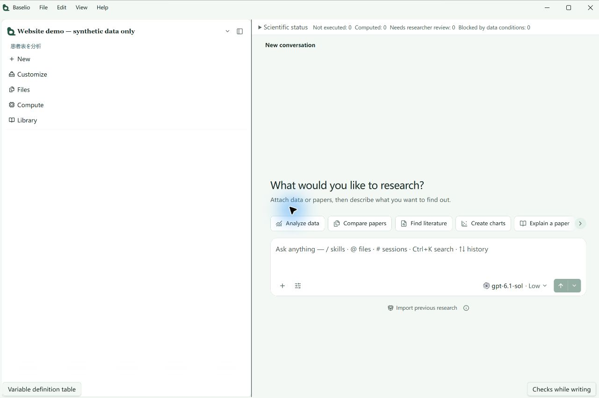
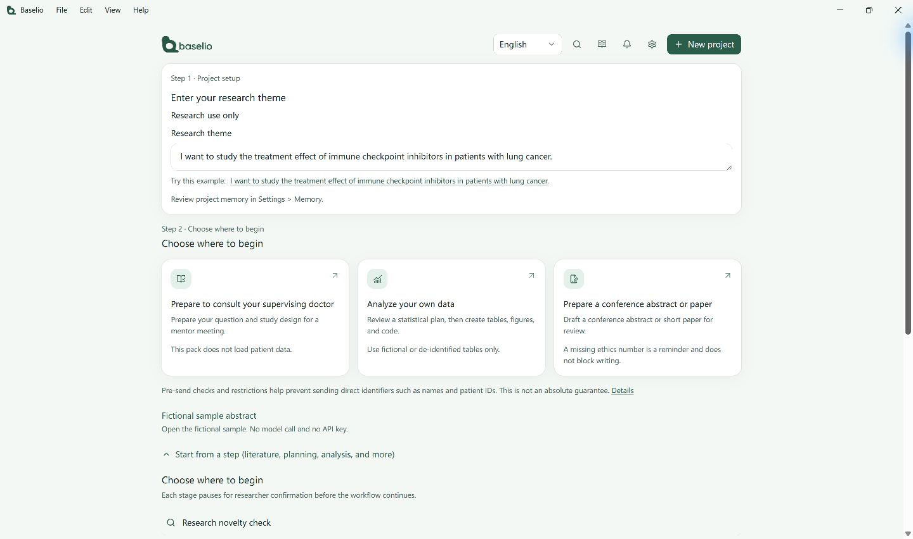
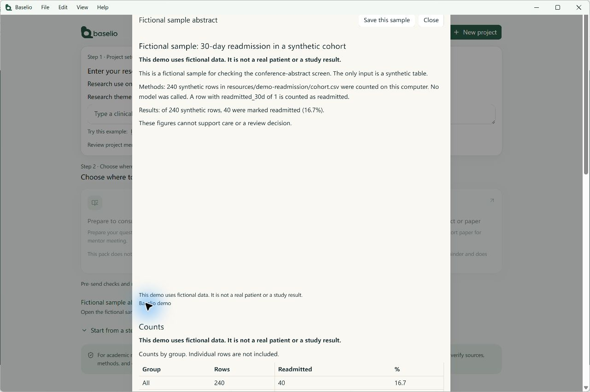

准备研究
把临床疑问梳理为人群、干预/暴露、对照与结局。先核对检索范围和文献来源，再讨论研究方案；伦理与注册信息由研究者补充确认。
产品演示
先看整体，再看细节。下方主图展示真实产品的完整英文工作台，包括项目导航、科研状态、任务入口与输入区；辅助图展示英文首页和内置虚构样本。演示项目为空，样本仅含合成数据，均不代表完整科研流程或真实研究结论。
采集版本：0.1.33-beta.20 · 2026-11-01 · 英文界面为主



全部为真实产品窗口原图，保留完整窗口比例，未做生成式修改。点击图片可查看原图；版本和配置可能不同。官网不执行科研任务。
场景说明 · 非执行结果
把临床疑问梳理为人群、干预/暴露、对照与结局。先核对检索范围和文献来源，再讨论研究方案；伦理与注册信息由研究者补充确认。
在机构允许的前提下使用去标识化数据。确认变量与统计计划，检查运行环境、代码及实际输出；不能执行时不把示例当作结果。
以核实过的文献和实际分析结果为基础组织草稿。检查引用与数字，保留缺失信息；作者负责最终科学判断与投稿审核。
产品能力
让分散的资料、决策与产出，在同一个研究项目中衔接。
整理已有研究、证据冲突与研究空白，用 PMID / DOI 连接可核查来源。
梳理人群、结局、纳入排除标准与设计，把待补充的伦理与注册信息明确列出。
在本机 Python / R 环境执行并保存真实输出；发送前有隐私门禁，命中疑似患者信息就拦下。无法执行时明确说明。
论文与 PDF 保留版式地生成双语对照译文，术语、数字与图表标题逐处核对。
基于已核实文献、方案与真实结果起草论文，缺失信息保留为待补充。
桌面端配对后可用手机浏览器继续查看与提问；算力可接到自己的 SSH 主机，也可只用本机。
研究流程
每个关键阶段都停下来等你判断，再进入下一步。
明确 PICO / PECO 与主要结局。
确认检索范围与拟纳入文献。
确认研究设计与统计计划。
检查实际输出，审核草稿。
数据与信任
方案、分析与论文需要研究者核对。草稿不能替代执行记录或最终审核。
追溯输入、方法、代码版本与实际输出；环境无法执行时明确说明。
发出的内容先在本地扫描，命中疑似患者信息就拦下不发送；外发只走固定域名清单。桌面运行不等于全程离线，机构要求仍需核实。
Baselio 不提供患者诊断、分诊或治疗建议，不替代临床专业判断。
当前采用邀请制。可用范围、模型费用、Credits 与机构试点条款需在邀请或咨询时确认；本页不承诺永久免费、固定额度或特定交付时间。
常见问题
医学文献综述、新颖性初步评估、研究方案设计、去标识化数据分析与论文写作。
不会。关键步骤采用「AI 提议 → 研究者确认 → 下一阶段」。
不能仅凭桌面应用作此保证。发送前会先做隐私检查，命中疑似患者信息就不发送；外发只走固定域名清单。请仍按机构要求判断能否外发。
可以。桌面端启用远程访问并完成配对后，用手机浏览器即可继续查看与提问；桌面主机需要保持开机和联网。
界面提供中文（简繁）、日语、英语、德语、西班牙语、法语、韩语与俄语；日语是当前 beta 的主要体验语言。
beta 期间通过邀请分发；正式安装包、代码签名与自动更新渠道仍在配置中。
beta 期间小范围邀请，欢迎申请体验。